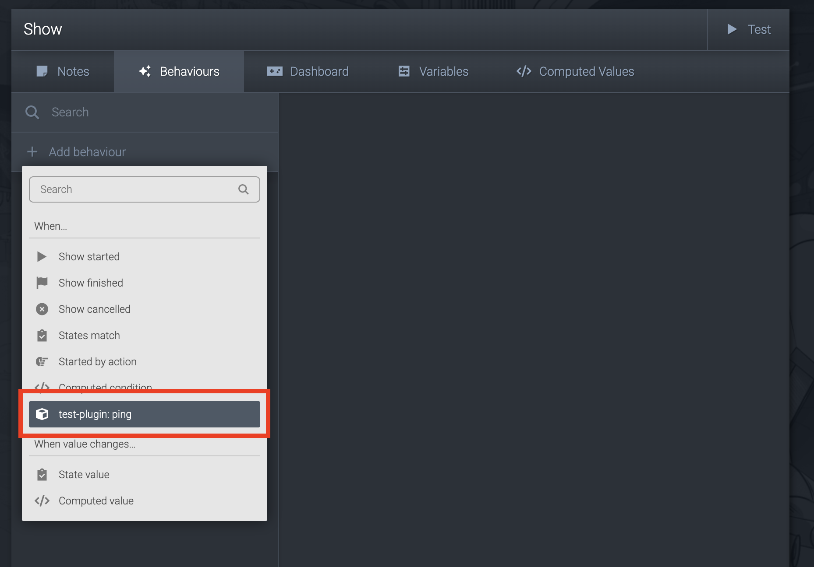
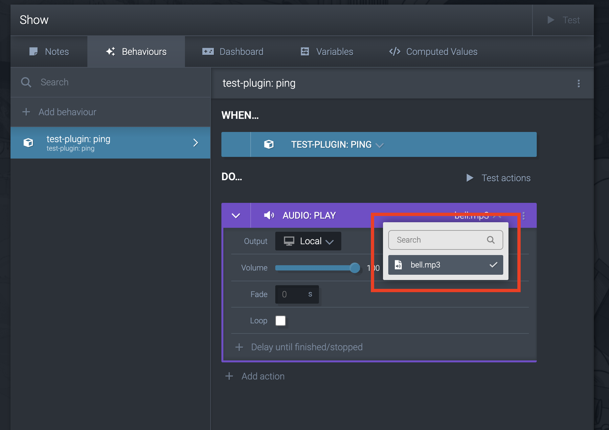
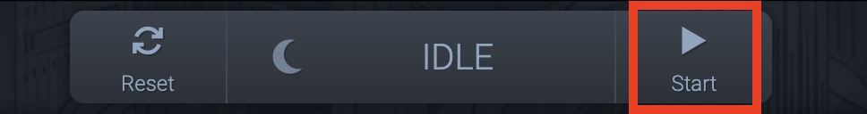

@clockworkdog/cogs-client
COGS SDK - Javascript
Documentation
Quickstart
This guide should get you up and running with a custom COGS plugin in a few minutes. We'll make an annoying bell that rings every second.
-
Make a new folder for your plugin.
mkdir plugins/test-plugin -
Create a manifest file at
plugins/test-plugin/cogs-plugin-manifest.jsonThis tells COGS about your plugin.{
"name": "test-plugin",
"version": "0.0.0",
"events": {
"toCogs": [
{
"name": "ping"
}
]
}
} -
Download the COGS JavaScript SDK and save it in the plugins folder.
# macOS / Linux
curl -L -o plugins/test-plugin/cogs-client.js https://unpkg.com/@clockworkdog/cogs-clientAvoid
<script>tags withhttp...so your content works without an internet connection. -
Add an index file at
plugins/test-plugin/index.html. This is the logic of your plugin.<html>
<head>
<script src="./cogs-client.js"></script>
</head>
<body>
<script type="module">
const { CogsConnection, CogsAudioPlayer } = COGS;
const manifest = await (await fetch('./cogs-plugin-manifest.json')).json();
let interval;
const cogsConnection = new CogsConnection(manifest);
cogsConnection.addEventListener('open', () => {
interval = setInterval(() => {
cogsConnection.sendEvent('ping')
}, 1000);
});
cogsConnection.addEventListener('close', () => {
clearInterval(interval);
});
</script>
</body>
</html> -
Download a sound to play, and put it in the
/assetsfolder.You could also use our bell sound.
-
Enable your plugin in COGS.

-
Create a behaviour to listen to the
pingevent. -
Make the behaviour do something. In this case it'll play our bell sound.
 -
Start the show!

We strongly suggest that for anything more complex you follow our guide using TypeScript and Vite. TypeScript will make it a lot easier to know why things go wrong, and Vite will make developing a lot quicker with hot reloading.
Using Typescript & Vite
NPM / Yarn
Then add cogs-client with NPM or Yarn:
npm install --save @clockworkdog/cogs-client
# OR
yarn add @clockworkdog/cogs-client
Usage
Create a cogs-plugin-manifest.js file
See CogsPluginManifestJson for details of what to include.
If using Typescript set "allowJs": true in your tsconfig.json.
Use the @type {const} JSDoc annotation to allow the manifest to be imported as a literal type and @satisfies {import("@clockworkdog/cogs-client").CogsPluginManifest} to allow your editor to check the validity of the manifest.
e.g.
module.exports =
/**
* @type {const}
* @satisfies {import("@clockworkdog/cogs-client").CogsPluginManifest}
*/
({
name: 'Big Button',
icon: 'bullseye-pointer',
description: 'A big, colorful touchscreen button',
version: '1',
config: [
{
name: 'Color',
value: { type: 'string', default: 'red' },
},
],
state: [
{
name: 'Enabled',
value: { type: 'boolean', default: false },
writableFromCogs: true,
},
],
events: {
toCogs: [
{
name: 'Pressed',
value: { type: 'boolean' },
},
],
fromCogs: [
{
name: 'Explosion',
},
],
},
media: {
audio: true,
video: true,
images: true,
},
});
Import the library
Browser
const { CogsConnection, CogsAudioPlayer } = COGS;
Javascript
const { CogsConnection, CogsAudioPlayer } = require('@clockworkdog/cogs-client');
Typescript / ES6
import { CogsConnection, CogsAudioPlayer } from '@clockworkdog/cogs-client';
Connect to COGS
Initialize a CogsConnection with the manifest you created above.
let connected = false;
import * as manifest from './cogs-plugin-manifest.js'; // Requires `"allowJs": true` in `tsconfig.json`
const cogsConnection = new CogsConnection(manifest);
cogsConnection.addEventListener('open', () => {
connected = true;
});
cogsConnection.addEventListener('close', () => {
connected = false;
});
cogsConnection.addEventListener('config', ({ config }) => {
// Handle new config
// `config` is of type `{ [name: string]: number | string | boolean }`
});
cogsConnection.addEventListener('state', ({ state }) => {
// Handle state updates
// `state` is of type `{ [name: string]: number | string | boolean }`
});
cogsConnection.addEventListener('event', ({ name, value }) => {
// Handle events from COGS
// `name` is the event name.
// `value` is of the type defined in manifest, one of `number | string | boolean | undefined`.
});
cogsConnection.addEventListener('message', ({ message }) => {
// Handle low-level COGS messages. See `types/CogsClientMessage.ts`
});
function sendEventToCogs() {
cogsConnection.sendEvent('Hello');
}
function sendPortUpdateToCogs() {
cogsConnection.setState({ port1: 100 });
}
You can save arbitrary data to COGS which will be restored when reconnecting with COGS:
const cogsConnection = new CogsConnection(manifest, undefined, undefined, {
// Initial items in the store
'my-key': { foo: 0, bar: '' },
});
// Update the store
cogsConnection.store.setItems({ 'my-key': { foo: 1, bar: 'two' } });
// Get item from data store
cogsConnection.store.items.getItem('my-key');
// Listen for data changes
cogsConnection.store.addEventListener('item', ({ key, value }) => {
console.log(key, 'item changed:', value);
});
cogsConnection.store.addEventListener('items', ({ items }) => {
console.log('items changed:', items);
});
Support audio actions
Add audio to cogs-plugin-manifest.js:
{
media: {
audio: true;
}
}
Add CogsAudioPlayer to your page:
const audioPlayer = new CogsAudioPlayer(cogsConnection);
// Optional
audioPlayer.addEventListener('state', (audioState) => {
// Handle audio state changes. See `types/AudioState.ts`
});
Local development
When developing locally you should connect to COGS in "simulator" mode by appending ?simulator=true&t=media_master&name=MEDIA_MASTER_NAME to the URL. Replace MEDIA_MASTER_NAME with the name of the Media Master you set in COGS.
For example, with your custom content hosted on port 3000, http://localhost:3000?simulator=true&t=media_master&name=Timer+screen will connect as the simulator for Timer screen.